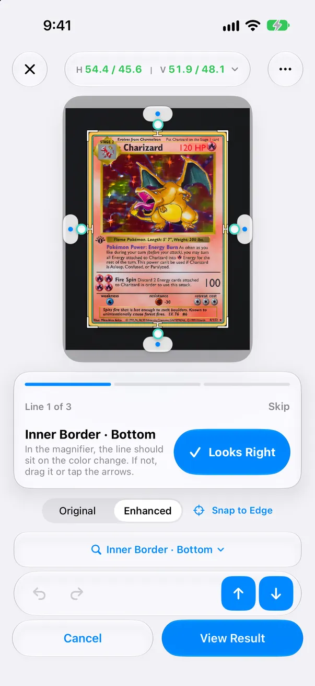

Guided line check Gratuit
Quand une ligne mérite un second regard, l’éditeur vous guide ligne par ligne, en commençant par la moins sûre. La loupe se place sur chaque ligne ; touchez « Looks Right » pour passer à la suivante, ou faites glisser la ligne au bon endroit.
Pourquoi vérifier Gratuit
Chaque étape donne la raison : reflet, flou, photo sombre ou basse résolution, tapis de la même couleur que le bord, ou cadre imprimé introuvable. Si une nouvelle photo règle le problème, l’app le dit.
